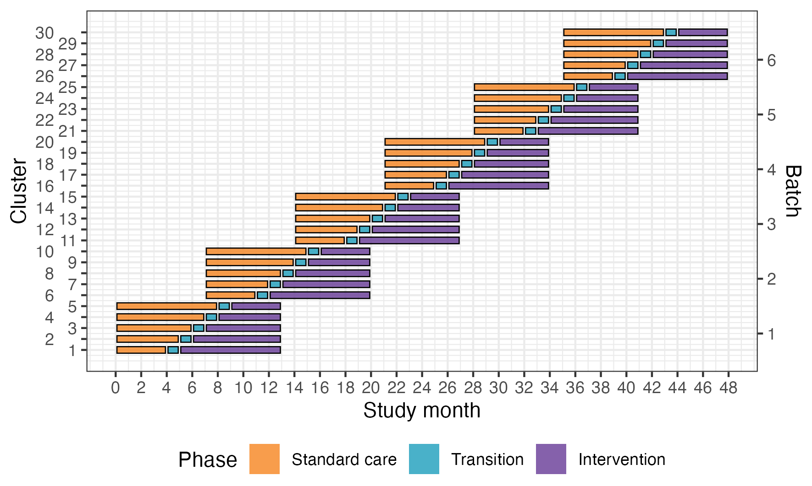
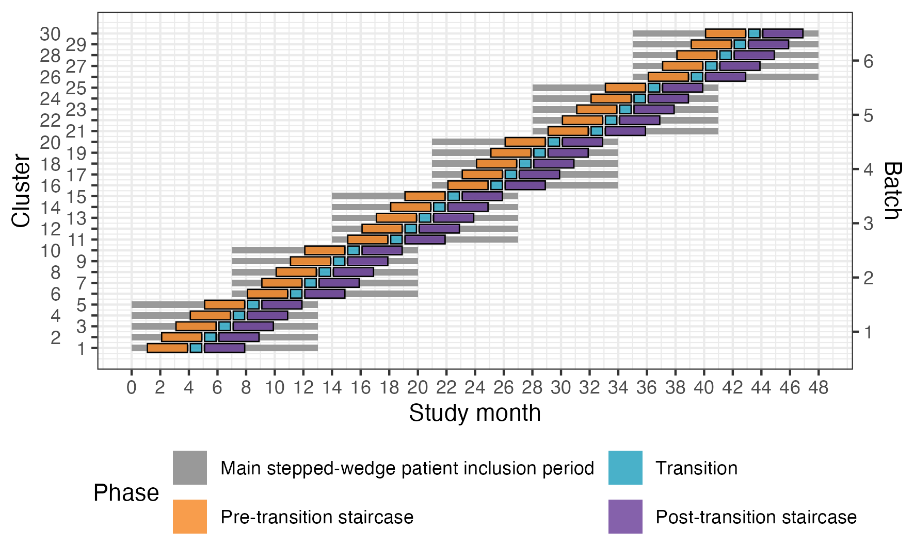
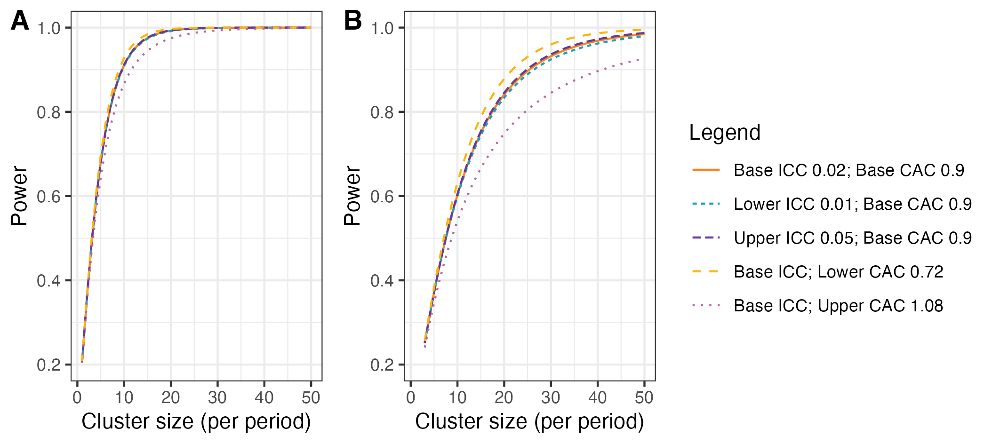

Statistical Analysis Plan
ADVANCE TRAUMA
Effects of Advanced Trauma Life Support® Training Compared to Standard Care on Adult Trauma Patient Outcomes: A Stepped-Wedge Cluster Randomised Trial
1 Administrative information
1.1 Study identifiers
Protocol version 1.5.0 dated 2025-06-12
ClinicalTrials.gov identifier: NCT06321419
Clinical Trials Registry - India identifier: CTRI/2024/07/071336
1.2 Changelog
Once version 1.0.0 is finalised, this section will be updated with a changelog.
1.3 Contributors
| Name and ORCID | Affiliation | Role |
|---|---|---|
| Martin Gerdin Wärnberg (MGW) |
Karolinska Institutet | Principal Investigator |
| Anna Olofsson (AO) |
Karolinska Institutet | Statistician, TMG member |
| Karla Hemming (KH) |
University of Birmingham, Birmingham, UK | Statistician, TMG member |
| James Martin (JM) |
University of Birmingham, Birmingham, UK | Statistician |
| Jessica Kasza |
Monash University, Melbourne, Australia | Statistician |
2 Trial synopsis
Title Effects of Advanced Trauma Life Support® Training Compared to Standard Care on Adult Trauma Patient Outcomes: A Stepped-Wedge Cluster Randomised Trial
Rationale Trauma is a massive global health issue. Many training programmes have been developed to help physicians in the initial management of trauma patients. Among these programmes, Advanced Trauma Life Support® (ATLS®) is the most popular, having trained over one million physicians worldwide. Despite its widespread use, there are no controlled trials showing that ATLS® improves patient outcomes. Multiple systematic reviews emphasise the need for such trials.
Aim To compare the effects of ATLS® training with standard care on outcomes in adult trauma patients.
Primary Outcome In-hospital mortality within 30 days of arrival at the emergency department.
Trial Design Batched stepped-wedge cluster randomised trial in India.
Trial Population Adult trauma patients presenting to the emergency department of a participating hospital.
Sample Size 30 clusters and at least 4320 patients.
Eligibility Criteria
Clusters are secondary or tertiary hospitals providing trauma care in India that admit or refer/transfer for admission at least 400 patients with trauma per year. Within each cluster, one or more units of physicians providing initial trauma care in the emergency department will be trained.
Participants are adult trauma patients who present to the emergency department of participating hospitals and are admitted or transferred for admission.
Intervention The intervention will be ATLS® training, a proprietary 2.5 day course teaching a standardised approach to trauma patient care using the concepts of a primary and secondary survey. Physicians will be trained in an accredited ATLS® training facility in India.
Ethical Considerations We will use an opt-out consent approach for collection of routinely recorded data. We will obtain informed consent for collection of non-routinely recorded data, such as quality of life and disability outcomes. Patients who are unconscious or lack a legally authorized representative will be included under a waiver of informed consent. Note that consent here refers to consent to data collection.
Trial Period February 2025 to October 2029
3 Special considerations
3.1 Funding
This trial is not yet fully funded. The Trial Management Group has decided to proceed with the trial with the expectation that additional funding will be secured. The Trial Steering Committee will be informed of the funding status at each meeting. If funding is not secured, the trial will be stopped. This will likely result in an underpowered trial. The justification for this decision is that the intervention is considered standard of care in many countries and the data collection is considered minimal risk. There is therefore a very small risk of harm to patient participants, but a potential direct benefit to those patient participants who receive the intervention. The benefit-risk ratio is therefore considered to be favourable, even in the case of an underpowered trial.
4 Aim and objectives
4.1 Aim
To compare the effects of ATLS® training with standard care on outcomes in adult trauma patients.
4.2 Objectives
- To estimate the effects of ATLS® training on 30-day in-hospital mortality compared to standard care.
- To assess the robustness of the main analysis results to different model specifications through sensitivity analyses.
- To estimate the effects of ATLS® training on secondary outcomes compared to standard care.
- To explore the effects of ATLS® training on subgroups of patients compared to standard care.
5 Statistical analysis
5.1 Design
This is a batched stepped-wedge cluster randomised trial, including a total of 30 clusters (see Figure 1). The trial will be composed of 6 batches of identical 12-period 5-sequence designs, with one cluster being assigned to each sequence of each batch1. Each period is one month, and each cluster will be in the trial for a total of 13 months. The intervention will be implemented during a one-month transition period, which will be excluded from the analysis. There will be an overlap of 6 months between successive batches.
Because certain secondary outcomes will be more burdensome to collect and because we anticipate larger effects on these outcomes, we will nest a staircase design within the main stepped-wedge design to measure these outcomes (see Figure 2)2. The staircase design will include a random subset of patients presenting during the three months preceding the transition phase, and the three months following the transition phase.

5.2 Randomisation of clusters
We will assign clusters to batches as they are found to be eligible and receive ethical approval. Batches will include clusters from hospitals in different regions to optimize trial logistics. We will randomise the clusters allocated to each batch to the different intervention implementation sequences within that batch. We will balance the randomisation within each batch on cluster size, defined as monthly volume of eligible patient participants, using covariate constrained randomisation. The random allocation sequence will be generated by JM who will send the results to the trial team, to allow the logistics of securing seats in upcoming courses to be initiated. We will conceal the randomisation order to the sites for as long as it is logistically possible, considering that arrangements at the site level for sending physicians to ATLS® training need to be made in advance.
5.3 Outcomes
5.3.1 Primary outcome
The primary outcome will be in-hospital mortality within 30 days of arrival at the emergency department. We define this outcome as any death occurring in the hospital during the initial admission, up to 30 days post arrival at the emergency department. Clinical research coordinators will extract information on death from patient hospital records. If the patient has been transferred to another hospital, the clinical research coordinators will collect data on this outcome by calling the patient or a patient representative, or by contacting the hospital to which the patient was transferred. Data on this outcome will be collected continuously during the trial.
5.3.2 Secondary outcomes
5.3.2.1 Collected using the main stepped-wedge design
- All cause mortality within 24 hours, 30 days and three months of arrival at the emergency department. In contrast to the primary outcome, all-cause mortality includes all deaths regardless of setting. Data on this outcome will be collected in the same way as for the primary outcome.
- Length of emergency department stay. Data on this outcome will be collected from patient hospital records.
- Length of hospital stay. Data on this outcome will be collected from patient hospital records.
- Intensive care unit admission. Data on this outcome will be collected from patient hospital records.
- Length of intensive care unit stay. Data on this outcome will be collected from patient hospital records.
- Return to work at 30 days and three months after arrival at the emergency department. Data on this outcome will be collected in person if the patient is still in hospital, or by phone if the patient has been discharged.
5.3.2.2 Collected using the nested staircase design
- Adherence to ATLS® principles during initial patient resuscitation, up to one hour after the physician has first seen the patient. This assessment will be done using a 14 item checklist covering the key steps of the ATLS® primary survey, which was modelled based on previous work on ATLS® adherence3. We will consider completion of all 14 steps as 100% adherence. The clinical research coordinators collecting the data will be trained by the trial team to do this, prior to the start of the trial. We will collect this data by observing the care of a random sample of patients. The sampling will be designed as a nested staircase design.
- Quality of life within seven days of discharge, and at 30 days and three months of arrival at the emergency department, measured by the official and validated translations of the EQ5D3L. This outcome is only relevant to alive patients. Data on this outcome will be collected in person if the patient is still in hospital, or by phone if the patient has been discharged. We will collect this data using a nested staircase design.
- Disability within seven days of discharge, and at 30 days and three months of arrival at the emergency department, assessed using the WHO Disability Assessment Schedule 2.0 (WHODAS 2.0). This outcome is only relevant to alive patients. Data on this outcome will be collected in person if the patient is still in hospital, or by phone if the patient has been discharged. This data will also be collected using a nested staircase design.
5.4 Statistical hypotheses
Our primary statistical hypotheses are:
- Null hypothesis: There is no difference in the primary outcome of 30-day in-hospital mortality between those randomised to ATLS® and standard care, meaning that the odds ratio (OR) for ATLS® vs standard care would be 1.
- Alternative hypothesis: There is an absolute difference in the primary outcome of 30-day in-hospital mortality between those randomised to ATLS® and standard care of at least 5% units, meaning that the OR for ATLS® vs standard care would be different from 1. Our expectation, based on our pilot study and review of the literature, is that the OR will be less than 1, indicating lower odds of 30-day in-hospital mortality among those randomised to ATLS® group compared to those randomised to the standard care group.
5.5 Sample size calculations
5.5.1 Main stepped wedge design and primary outcome
With 30 clusters across 6 batches and a total sample size of 4320 our study has ~90% power across different combinations of cluster autocorrelations (CAC) and intra-cluster correlations (ICC) to detect a reduction in the primary outcome of in-hospital mortality within 30 days from 20% under standard care to 15% after ATLS® training (see Figure 3)4. This 5% absolute reduction in mortality is a clinically meaningful and conservative estimate based on our updated systematic review and pilot study5,6. We allowed for the clustered design, incorporated the one month transition period, and assumed: a discrete time decay correlation structure, an ICC of 0.02 (but considered sensitivity across the range 0.01-0.05), and a CAC of 0.9 (but considered sensitivity across the range 0.8-1.0), based on our pilot study and current guidance7–10. We included the CAC to allow for variation in clustering over time. We assume that each cluster will contribute approximately 12 observations per month to the analysis, but allowed for substantial variation in cluster sizes, based on our previous work.

5.5.2 Nested staircase design and secondary outcomes
The secondary outcomes that will be measured using the nested staircase design are adherence to ATLS® principles during initial patient resuscitation, quality of life, and disability. The expected effect of the intervention on each of these outcomes are an improvement in adherence from 50% during standard care to 70% after training11, an increase in EQ5D5L health status from 70 during care to 75 after training12, and finally a decrease in disability from a baseline value of 25 during standard care to 22.5 after training13. For quality of life and disability, these effects correspond to standardised effect sizes, expressed as Cohen’s d, of 0.5. With 30 clusters in total, six per sequence, for a discrete time decay correlation structure, with ICCs of 0.01 to 0.15 and a CAC of 0.8, there is >80% power to detect these effects by including four patients in each cluster in each period. Accounting for loss to follow-up, we will include at least six patients per cluster per month. These patients will be a random subset of patients included in the primary outcome data collection during the staircase months. The random subset will be selected using simple random sampling on the shift level, meaning that the timing of the clinical research coordinator’s shift will be randomised to cover approximately eight hours during the morning, afternoon, or night shift. Adherence to ATLS® principles, quality of life, and disability will be measured in all patients included during these shifts. In each hospital, the number of shifts that will be randomised will be determined by the volume of patients included during the months preceding the staircase months.
5.6 Statistical principles
5.6.1 Statistical software
We will use the R Statistical Software for all analyses14.
5.6.2 Levels of statistical significance and confidence
We will use a two-sided significance level of 0.05 for all analyses, and we will report 95% confidence intervals (CI) for all estimates. We will not adjust for multiple testing because no secondary outcome is regarded as singularly more important.
5.7 Analysis populations
The unit of randomisation is the hospital, because all units trained in the same hospital will be treated as one cluster, but the unit of analysis is the individual patient. The group allocation for a patient depends on the period in which the patient was admitted to the hospital, and patients will be considered exposed to the intervention if they were admitted to the hospital at any time point following the transition period. We will use an intention-to-treat approach for all analyses, according to the planned date of transition from standard care. We might consider a per protocol analysis if clusters deviate considerably from the planned date of transition, using the actual date of transition as the cut-off point. We will report the results of the per protocol analysis as a sensitivity analysis. We will use a CONSORT diagram to display the flow of hospitals, clusters and patients through the trial. We will present cluster level summaries of the intervention effect. We will report the study according to the CONSORT guidelines for stepped-wedge randomised trials15.
5.8 Baseline analyses
5.8.1 Cluster characteristics
We will describe cluster characteristics including location and size using frequencies and percentages for discrete variables and means, standard deviations, medians and interquartile ranges (Q1-Q3) for continuous variables.
5.8.2 Patient characteristics
We will describe patient characteristics at baseline, meaning all pre-training periods, per treatment group and overall using frequencies and percentages for discrete variables and means, standard deviations, medians and interquartile ranges (Q1-Q3) for continuous variables. We will not adjust for clustering when presenting baseline characteristics.
5.9 Interim analysis
There will be one interim analysis after half of the batches have completed the trial. The interim analysis will be assessed by the joint Trial Steering and Data Monitoring Committee. The purposes of this interim analysis will be to assess the trial’s feasibility and recommend that the trial be stopped if it is not feasible (e.g. if hospitals fail to adhere to the randomisation schedule or if there are substantial missing data in outcomes), and to compare characteristics across intervention conditions to monitor for differential recruitment/ascertainment between the intervention and control groups. No efficacy stopping is planned because any estimates obtained at the time point of the interim analysis will be associated with major statistical uncertainties.
5.10 Analysis of the primary outcome
The primary outcome is in-hospital mortality within 30 days of arrival at the emergency department and will be analysed as a dichotomous variable.
We will estimate the intervention effect as the odds ratio (OR) of death between the ATLS® and standard care arms, with an OR < 1 indicating lower odds of death in the ATLS® arm compared to the standard care arm and vice versa.
We will also estimate the absolute risk difference (ARD) of death between the ATLS® and standard care arms, with an ARD < 0 indicating lower risk of death in the ATLS® arm compared to the standard care arm and vice versa.
We will use a mixed-effects binomial regression model to estimate the effect of ATLS® on mortality. The OR will be estimated using the logit link, and the ARD will be estimated using the identity link.
The primary analysis will be based on the most complex model that converges from a prespecified sequence of models of decreasing complexity, and this model will then be subject to sensitivity analyses.
The analysis will proceed from the most complex model to progressively simpler models if convergence or numerical stability issues arise. If the binomial model with the logit link converges but the corresponding model with the identity link does not, then we will report only an OR.
All models in this sequence will include a fixed effect for intervention exposure and adjust for time, although the parametrisation of time and the random effects structure may be simplified.
The model sequence is defined as follows:
- Primary model: a model including fixed effects for period, modelled as a categorical variable with separate period effects for each batch, and a fixed effect for intervention exposure. Clustering will be accounted for by including a random intercept for cluster and a random cluster-by-period effect, both assumed to follow a normal distribution. The model is specified in Equation 1.
\[ g\{\Pr(Y_{bkti} = 1)\} = μ + β_bt + θ X_bkt + α_bk + γ_bkt \tag{1}\]
- Simplified random effects structure: a model including fixed effects for period and intervention exposure and a random intercept for cluster only, thereby removing the random cluster-by-period effect. The model is specified in Equation 2.
\[ g\{\Pr(Y_{bkti} = 1)\} = μ + β_bt + θ X_bkt + α_bk \tag{2}\]
- Model with shared period effects: a model in which period effects are shared across batches, with time adjusted for using a common period effect or calendar time modelled directly (e.g., as a continuous covariate or using splines), while retaining the random effects structure. The model is specified in Equation 3.
- Combined simplified model: a model that includes both a simplified random effects structure (random intercept for cluster only) and shared period effects. This represents the most parsimonious mixed-effects model considered acceptable for the primary analysis. The model is specified in Equation 4.
\[ g\{\Pr(Y_{bkti} = 1)\} = \mu + \beta_{t} + \theta X_{bkt} + \alpha_{bk} \tag{4}\]
Where:
- \(g(\cdot)\): the link function, specified as either the logit link, \(g(p) = \log\{p/(1-p)\}\), or the identity link, \(g(p) = p\), depending on the estimand of interest.
- \(\theta\): the intervention effect, represented as a fixed effect of intervention exposure (the primary estimand); under the logit link this represents the log-odds ratio for death associated with ATLS® exposure compared with standard care, and under the identity link it represents the absolute risk difference.
- \(\Pr(Y_{bkti} = 1)\): the probability of death for patient \(i = 1, \dotsc, m\) in cluster \(k = 1, \dotsc, \texttt{r clusters}\) during period \(t = 1, \dotsc, \texttt{r total.months - 1}\) in batch \(b = 1, \dotsc, \texttt{r batches}\).
- \(\mu\): the intercept, representing the value of the linear predictor for the reference levels of all fixed effects, with random effects equal to zero.
- \(\beta_t\): the fixed effect of period \(t\), shared across batches.
- \(\beta_{bt}\): the fixed effect of period \(t\) in batch \(b\), accounting for a separate period effect for each batch, resulting in a total of \(\texttt{r batches} \times (\texttt{total.months} - 1)\) period effects.
- \(X_{bkt}\): the intervention exposure indicator for cluster \(k\) during period \(t\) in batch \(b\), with \(X_{bkt} = 1\) for ATLS® and \(X_{bkt} = 0\) for standard care.
- \(\alpha_{bk}\): a normally distributed random effect for cluster \(k\) in batch \(b\), representing between-cluster (hospital-level) variability in the outcome.
- \(\gamma_{bkt}\): a normally distributed random effect for cluster \(k\) in period \(t\) in batch \(b\), representing within-cluster variation over time and capturing cluster-specific deviations from the average period effect.
The distributional assumptions for the random effects are specified in Equation 5.
\[ \begin{aligned} \alpha_{bk} &\overset{\text{iid}}{\sim} \mathcal{N}(0,\sigma^2_{\alpha}), \\ \gamma_{bkt} &\overset{\text{iid}}{\sim} \mathcal{N}(0,\sigma^2_{\gamma}), \\ \alpha_{bk} &\perp \gamma_{bkt}. \end{aligned} \tag{5}\]
To correct potential inflation of the type I error rate due to the small number of clusters, a small-sample correction will be applied. Our primary method will be the Kenward–Roger correction16, but this choice may be updated based on methodological developments available closer to the end of patient inclusion. The correction applied may also differ for outcomes collected via the complete stepped-wedge design and the incomplete nested staircase designs.
All models will be fitted using residual pseudo-likelihood estimation based on linearisation with subject-specific expansion (RSPL), due to its computational stability and robust performance in small-sample settings. If the binomial model with the logit link converges but the corresponding model with the identity link does not, then we will report only an OR.
5.10.1 Sensitivity analyses
We will conduct sensitivity analyses to assess the robustness of the primary analysis results to different modelling assumptions. In all sensitivity analyses, the focus will be on the stability of the estimated intervention effect \(\theta\). Unless otherwise stated, each sensitivity analysis will be operationalised using two separate models, one with the logit link and one with the identity link.
5.10.1.1 Models with autoregressive within-cluster correlation
We will explore whether models with more complex correlation structures provide a better fit to the data. These models are not used as primary analysis models because there is limited understanding of when such models converge and how best to choose between different plausible correlation structures. Instead, we include these models as sensitivity analyses.
We will first explore whether allowing temporal correlation of outcomes within clusters affects inference on the intervention effect. Specifically, we will consider a discrete time-decay correlation structure by specifying a random cluster effect with an autoregressive structure of order one (AR(1)), described in Equation 6. This parameterisation assumes that correlations between cluster-level random effects decay geometrically with increasing temporal separation between periods.
\[ \alpha_{bk,t} = \rho \alpha_{bk,t-1} + \epsilon_{t}, \quad \epsilon_{t} \sim \mathcal{N}(0, \sigma^2_\alpha) \tag{6}\]
Where:
- \(\rho\) is the correlation parameter governing the association between adjacent periods within the same cluster.
- \(\alpha_{bk,t}\) is the random effect for cluster \(k\) in period \(t\) in batch \(b\).
- \(\epsilon_t\) is a normally distributed error term.
We note that this AR(1) formulation differs slightly from alternative parameterisations used elsewhere in which correlations are specified through a joint covariance matrix. Although both approaches capture decaying temporal correlation, the parameter \(\rho\) is not directly equivalent to parameters used in other specifications and should not be interpreted interchangeably.
5.10.1.2 Models with batch-specific secular trends
To assess sensitivity to assumptions about common secular trends across batches, we will include a random batch-by-period effect allowing each batch to follow its own time trend. This specification accounts for the randomisation by batches and permits additional between-batch heterogeneity over time. The model is specified in Equation 7.
\[ g\{\Pr(Y_{bkti} = 1)\} = \mu + \beta_{bt} + \theta X_{bkt} + \alpha_{bk} + \gamma_{bkt} + \delta_{bt} \tag{7}\]
Where \(\delta_{bt}\) represents a random effect for batch \(b\) during period \(t\), capturing between-batch variation in secular trends over time.
5.10.1.3 Models with random cluster by intervention effects
To assess sensitivity to the assumption of a common intervention effect across clusters, we will extend the primary analysis model to allow the intervention effect to vary by cluster. Specifically, we will include a random cluster-level slope for the intervention exposure. The model is specified in Equation 8.
\[ g\{\Pr(Y_{bkti} = 1)\} = \mu + \beta_{bt} + \theta X_{bkt} + \alpha_{bk} + \gamma_{bkt} + u_{bk} X_{bkt} \tag{8}\]
Where:
- \(u_{bk} \sim \mathcal{N}(0,\sigma_u^2)\) is a random effect representing cluster-specific deviations from the average intervention effect.
- \(u_{bk}\) is assumed to be independent of the cluster random effect \(\alpha_{bk}\) and the cluster-by-period random effect \(\gamma_{bkt}\).
5.10.1.5 Models with time modelled with a spline function
We will further explore the potential for a time-varying treatment effect17. To explore if the fixed period effect is both parsimonious and adequate to represent the extent of any underlying secular trend, we will model calendar time using a shared natural cubic spline basis across all batches with knots at the equally spaced time points 3, 6 and 9. This will result in five spline basis functions, because the natural cubic splines are modelled with three degrees of freedom but are constrained to be linear before the first and after the last knot. The model is specified in Equation 10.
\[ g\{\Pr(Y_{bkti} = 1)\} = \mu + \sum_{j=1}^{5} \beta_j S_j(t, \{3,6,9\}) + \theta X_{bkt} + \alpha_{bk} + \gamma_{bkt} \tag{10}\]
Where:
- \(t\) denotes calendar time (period index) common to all batches.
- \(S_j(t, \{3,6,9\})\) denotes the \(j\)th natural cubic spline basis function, shared across batches.
- \(\beta_j\) is the coefficient for the \(j\)th spline basis function.
5.10.1.6 Models exploring lag and weaning effects
We will also extend the primary analysis model to include an interaction between treatment and number of periods since first treated, to examine if there is any indication of a relationship between duration of exposure to the intervention and outcomes. This will allow us to model different lag effects (whereby it takes time for the intervention to become embedded within the culture before its impact can properly start to be realised); as well as weaning effects (whereby the effect of the intervention starts to decrease – or fade). This type of analysis attempts to disentangle how some clusters end up having a long exposure to the intervention and others have a much shorter exposure time. The model is specified in Equation 11.
\[ g\{\Pr(Y_{bkti} = 1)\} = \mu + \beta_{bt} + \theta X_{bkt} + \theta_{\text{int}} X_{bkt} \times T_{bkt} + \alpha_{bk} + \gamma_{bkt} \tag{11}\]
Where \(\theta_{\text{int}}\) represents the interaction between intervention exposure and time since first treated, and \(T_{bkt}\) is the number of periods since first exposure.
5.10.2 Adjusted analyses
Fully adjusted covariate analysis will additionally adjust for (expected % missing data in parentheses):
- Age (<5%)
- Sex (<5%)
- Systolic blood pressure (25%)
- Glasgow Coma Scale (25%)
- Injury Severity Score (10%)
- Mechanism of injury (10%)
These are known individual-level prognostic factors for the primary outcome. These covariates will be included in the models specified in Equation 1 as fixed effects. We will model the continuous covariates assuming linear effects. We will assume no interaction between subgroups and secular time trends, which may be evaluated in future analyses if indicated.
5.10.3 Subgroup analyses
We will perform the following subgroup analyses:
- geographical region, defined using the state in which the participating hospital is located. Demonstrating the consistency of any effect across multiple regions will enhance the generalisibility of the results;
- age groups, defined as older adolescents (15-19 years), young adults (20-24 years), adults (25-59 years), and older adults (60 years and older) [18;
- sex, using the levels male and female;
- clinical cohorts, defined as blunt multisystem trauma, penetrating trauma, and severe isolated traumatic brain injury, with modification to avoid overlap between the cohorts; and
- cluster size (number of patients per hospital)
These subgroup analyses will be conducted by adding the subgroup variable and the interaction between the subgroup variable and the intervention exposure variable as fixed effects to the models specified in Equation 1.
5.10.4 Treatment of missing data
We will present the frequency and percentage of missing data for all variables. If the percentage of missing data for the primary outcome is less than 10%, we will perform a complete case analysis. If the percentage of missing data for the primary outcome is 10% or more, we will handle missing data depending on the missing data mechanism. If the data are missing at random (MAR), we will perform multiple imputation using multiple imputation by chained equations (MICE), imputing data for the primary outcome as well as all covariates included in the fully adjusted model. The number of imputations will be determined by the percentage of missing data, with a minimum of 20 imputations. If there is evidence that the data are missing not at random (MNAR), we will explore the impact of this assumption using a sensitivity analysis (e.g., pattern mixture models or selection models) to assess how robust our findings are to different assumptions about the missing data mechanism. Evidence that data are MNAR may include systematic differences in missingness across observed covariates, patterns suggestive of non-random dropout, or clinical expectations that missingness is related to unmeasured outcomes. Additionally, we will perform diagnostic checks after multiple imputation to ensure the quality of the imputation process, including comparing distributions of observed and imputed data and checking convergence.
5.11 Analysis of secondary outcomes
Unless otherwise stated, secondary outcomes will be analysed using the same mixed-effects modelling framework as specified for the primary outcome, including fixed effects for time and intervention exposure and random effects for cluster and cluster-by-period, with the link function and outcome distribution adapted to the scale of the outcome.
5.11.1 All cause mortality within 24 hours, 30 days and three months of arrival at the emergency department
These outcomes will be analysed as dichotomous variables using the mixed-effects binomial model with the logit and identity links specified in Equation 1, to estimate odds ratios and absolute risk differences.
5.11.2 Quality of life within seven days of discharge, and at 30 days and three months of arrival at the emergency department, among survivors
Quality of life will be measured using the official and validated translations of the EQ5D5L. This tool assesses five dimensions of health-related quality of life: mobility, self-care, usual activities, pain/discomfort, and anxiety/depression. Each dimension is rated on a Likert scale from 1 to 5. There is also a visual analogue scale (VAS) ranging from 0 to 100.
For each of the five ordinal dimensions, we will use a mixed-effects cumulative logit (proportional odds) model:
\[ \text{logit}\{\Pr(Y_{bkti} \leq j)\} = \mu_j + \beta_{bt} + \theta X_{bkt} + \alpha_{bk} + \gamma_{bkt} \tag{12}\]
Where \(\mu_j\) is the intercept for the \(j\)th category.
The VAS will be analysed as a continuous outcome using a linear mixed-effects model:
\[ \text{VAS}_{bkti} = \mu + \beta_{bt} + \theta X_{bkt} + \alpha_{bk} + \gamma_{bkt} + \epsilon_{bkti}, \quad \epsilon_{bkti} \sim \mathcal{N}(0,\sigma^2) \tag{13}\]
5.11.3 Disability within seven days of discharge, and at 30 days and three months of arrival at the emergency department, among survivors
We will measure disability using the WHO Disability Assessment Schedule 2.0 (WHODAS 2.0)19. This tool assesses six domains of functioning: cognition, mobility, self-care, getting along, life activities, and participation. Each domain is rated on a likert scale from 1 to 5, with 1 indicating no difficulties and 5 indicating extreme difficulties. We will analyse each domain separately using a mixed effects ordinal model as specified in Equation 12. We will also calculate a WHODAS 2.0 summary score using the method referred to as the “complex scoring” method. This method involves summing the item scores within each of the six domains, then summing the scores of all domains, and finally transforming the total score to a 0-100 scale. We will analyse the summary score using a linear mixed effects model as specified in Equation 13.
5.11.4 Return to work at 30 days and three months after arrival at the emergency department, among survivors
Return to work will be analysed as a dichotomous outcome using the mixed-effects binomial model specified in Equation 1 with the logit link.
5.11.5 Length of emergency department stay
Length of emergency department stay will be analysed as a time-to-event outcome, defined as time from arrival at the emergency department to discharge. We will treat death as a competing event and therefore use a mixed-effects competing risks model, specifically a Fine and Gray subdistribution hazards model. The model is specified in Equation 14.
\[ h^{(s)}_{bk}(t) = h^{(s)}_{0}(t) \exp\{\theta X_{bkt} + \beta_{bt} + \alpha_{bk}\} \tag{14}\]
Where:
- \(h^{(s)}_{bk}(t)\): the subdistribution hazard for discharge at time \(t\) for patients in cluster \(k\) in batch \(b\).
- \(h^{(s)}_{0}(t)\): the baseline subdistribution hazard function.
- \(\theta\): under the Fine–Gray model, represents the log subdistribution hazard ratio for discharge associated with ATLS® exposure.
- All other terms are defined as in the primary analysis model.
5.11.6 Length of hospital stay
Length of hospital stay will also be analysed as a time-to-event outcome, defined as time from arrival at the emergency department to hospital discharge, using the model specified in Equation 14.
5.11.7 Intensive care unit admission
Intensive care unit admission will be analysed as a dichotomous outcome using the mixed-effects binomial model specified in Equation 1 with the logit link.
5.11.8 Length of intensive care unit stay
Length of intensive care unit stay will also be analysed as a time-to-event outcome, defined as time from admission to the intensive care unit to discharge from the intensive care unit, using the model specified in Equation 14.
5.11.9 Adherence to ATLS® principles during initial patient resuscitation
We will assess adherence to ATLS® principles using a 14-item checklist that covers the key steps of the ATLS® primary survey. Adherence will be measured as the proportion of completed items on this checklist. This outcome will be analysed using a mixed-effects beta regression model with a logit link:
We will assess adherence to ATLS® principles using a 14-item checklist that covers the key steps of the ATLS® primary survey. Adherence will be measured as the proportion of completed items on this checklist. This outcome will be analysed using a mixed-effects beta regression model with a logit link:
\[ g\{\mathbb{E}(Y_{bkti})\} = \mu + \beta_{bt} + \theta X_{bkt} + \alpha_{bk} + \gamma_{bkt} \tag{15}\]
Where \(\mathbb{E}(Y_{bkti})\) denotes the expected adherence proportion. The intervention effect \(\theta\) represents the difference in expected adherence proportion on the logit (link) scale. Because the observed adherence proportion may take values of 0 or 1, values will be rescaled to lie in the open interval \((0,1)\) prior to fitting the beta regression model. A beta regression precision (dispersion) parameter will be estimated as part of the model.
6 References
1.
Kasza, J. et al. The batched stepped wedge design: A design robust to delays in cluster recruitment. Stat Med 41, 3627–3641 (2022).
2.
Grantham, K. L. et al. The staircase cluster randomised trial design: A pragmatic alternative to the stepped wedge. Statistical Methods in Medical Research 33, 24–41 (2024).
3.
Aukstakalnis, V. et al. Impact of video recordings review with structured debriefings on trauma team performance: A prospective observational cohort study. European Journal of Trauma and Emergency Surgery: Official Publication of the European Trauma Society (2024).
4.
Hemming, K. et al. A tutorial on sample size calculation for multiple-period cluster randomized parallel, cross-over and stepped-wedge trials using the shiny CRT calculator. Int J Epidemiol 49, 979–995 (2020).
5.
Nakhid, Z. et al. Effect of trauma life support training on patient outcomes: A systematic review and meta-analysis. Scandinavian Journal of Trauma, Resuscitation and Emergency Medicine (2026).
6.
Gerdin Wärnberg, M. et al. Feasibility of a cluster randomised trial on the effect of trauma life support training: A pilot study in India. BMJ Open 15, e099020 (2025).
7.
Campbell, M. K. et al. Determinants of the intracluster correlation coefficient in cluster randomized trials: The case of implementation research. Clinical Trials 2, 99–107 (2005).
8.
Eldridge, S. M. et al. How big should the pilot study for my cluster randomised trial be? Stat Methods Med Res 25, 1039–1056 (2015).
9.
Martin, J. et al. Intra-cluster and inter-period correlation coefficients for cross-sectional cluster randomised controlled trials for type-2 diabetes in UK primary care. Trials 17, (2016).
10.
Korevaar, E. et al. Intra-cluster correlations from the CLustered OUtcome dataset bank to inform the design of longitudinal cluster trials. Clinical Trials 18, 529–540 (2021).
11.
Lashoher, A. et al. Implementation of the World Health Organization Trauma Care Checklist Program in 11 Centers Across Multiple Economic Strata: Effect on Care Process Measures. World Journal of Surgery 41, 954–962 (2017).
12.
Kapitan, E. et al. The effect of trauma quality improvement programme implementation on quality of life among trauma patients in urban India. medRxiv 2024.09.28.24314529 (2024).
13.
Higgins, A. M. et al. The psychometric properties and minimal clinically important difference for disability assessment using WHODAS 2.0 in critically ill patients. Critical Care and Resuscitation 23, 103–112 (2021).
14.
R Core Team. R: A language and environment for statistical computing. (R Foundation for Statistical Computing, 2023).
15.
Hemming, K. et al. Reporting of stepped wedge cluster randomised trials: Extension of the CONSORT 2010 statement with explanation and elaboration. BMJ k1614 (2018).
16.
Grantham, K. L. et al. Evaluating the performance of Bayesian and restricted maximum likelihood estimation for stepped wedge cluster randomized trials with a small number of clusters. BMC Medical Research Methodology 22, 112 (2022).
17.
Kenny, A. et al. Analysis of stepped wedge cluster randomized trials in the presence of a time-varying treatment effect. Statistics in medicine 10.1002/sim.9511 (2022).
18.
Diaz, T. et al. A call for standardised age-disaggregated health data. The Lancet Healthy Longevity 2, e436–e443 (2021).
19.
Ustun, T. B. et al. Measuring Health and Disability: Manual for WHO Disability Assessment Schedule (WHODAS 2.0). (World Health Organization, 2010).